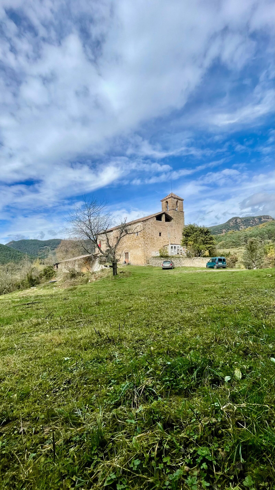
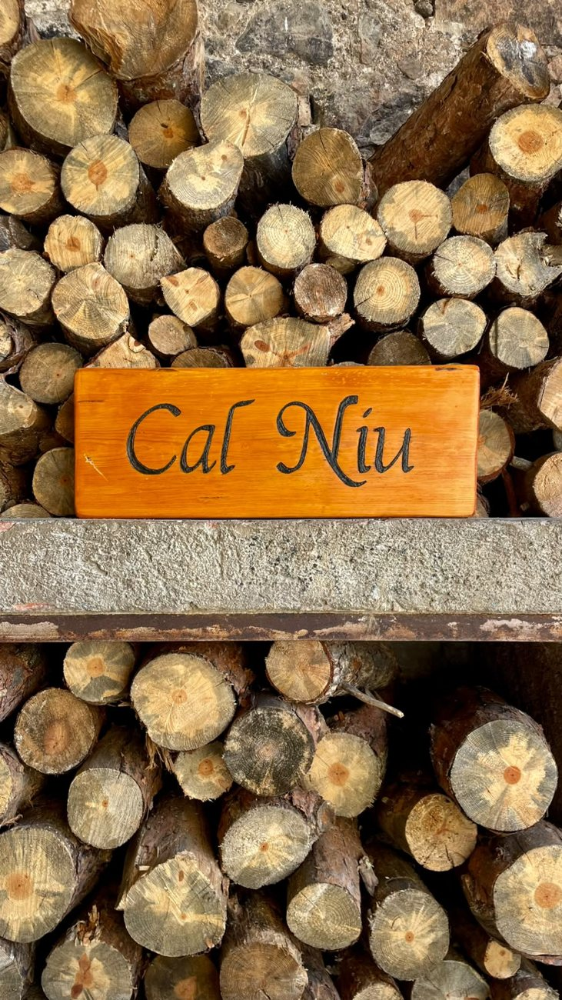

Projecte rural · Castellar del Riu
Cal Niu és un espai rural on creixen la cultura, la bioconstrucció, la permacultura i les ganes de fer comunitat.
Benvinguts a Cal Niu
Tornem a habitar el món rural des de la cura: per la terra, per les persones i pels sabers que es transmeten fent.
Saber-ne més
Què fem
Tallers, voluntariats, cultura i esdeveniments al llarg de tot l'any.
Vine a un taller, queda't de voluntari/a o porta la teva pròpia idea.